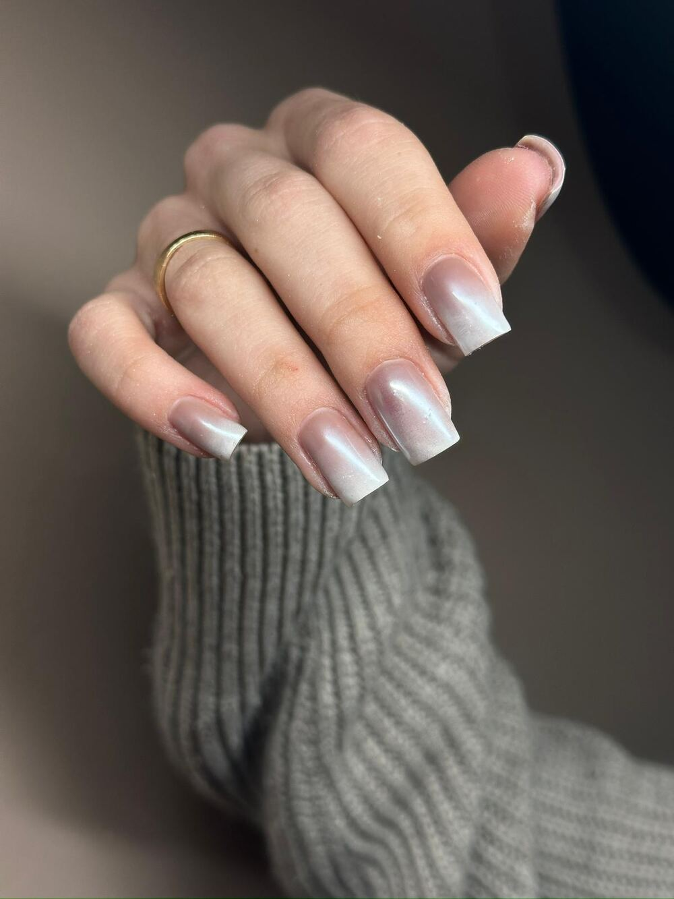
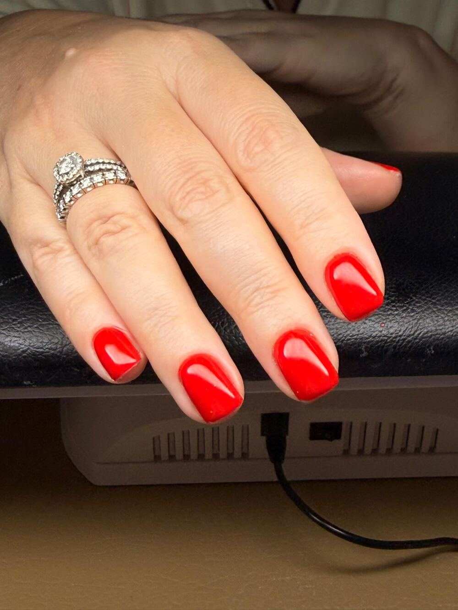
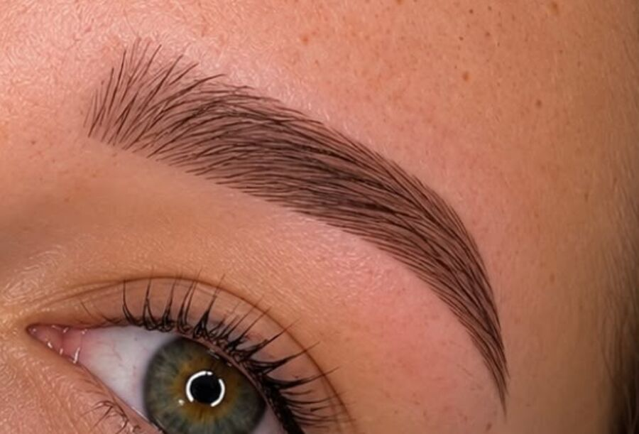
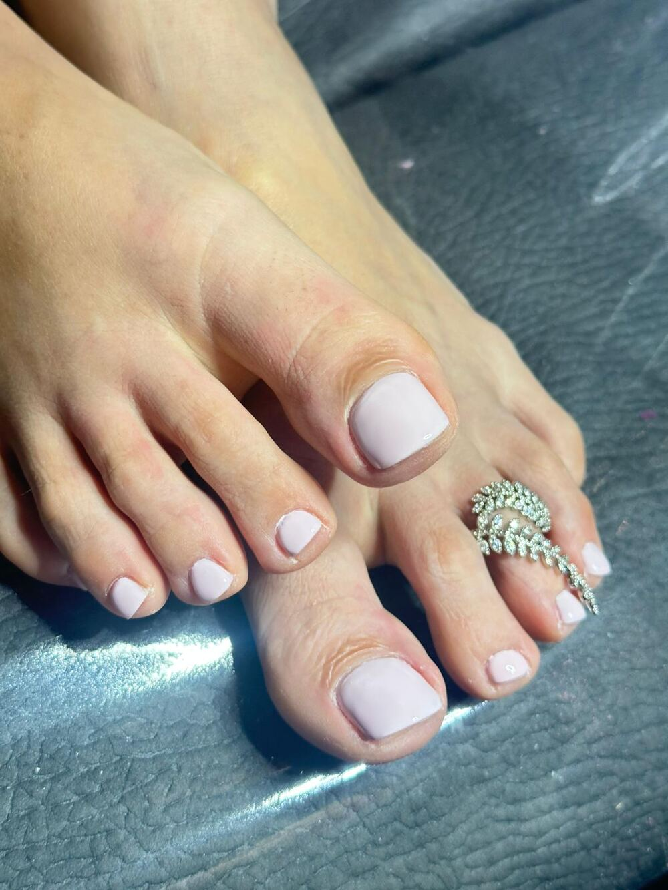
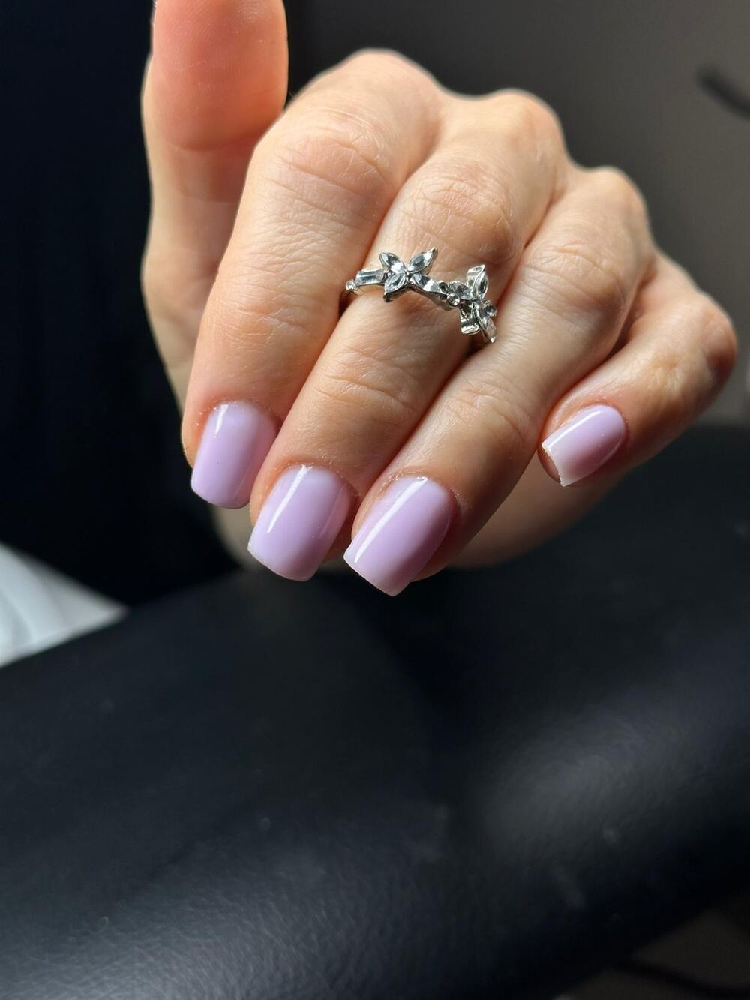
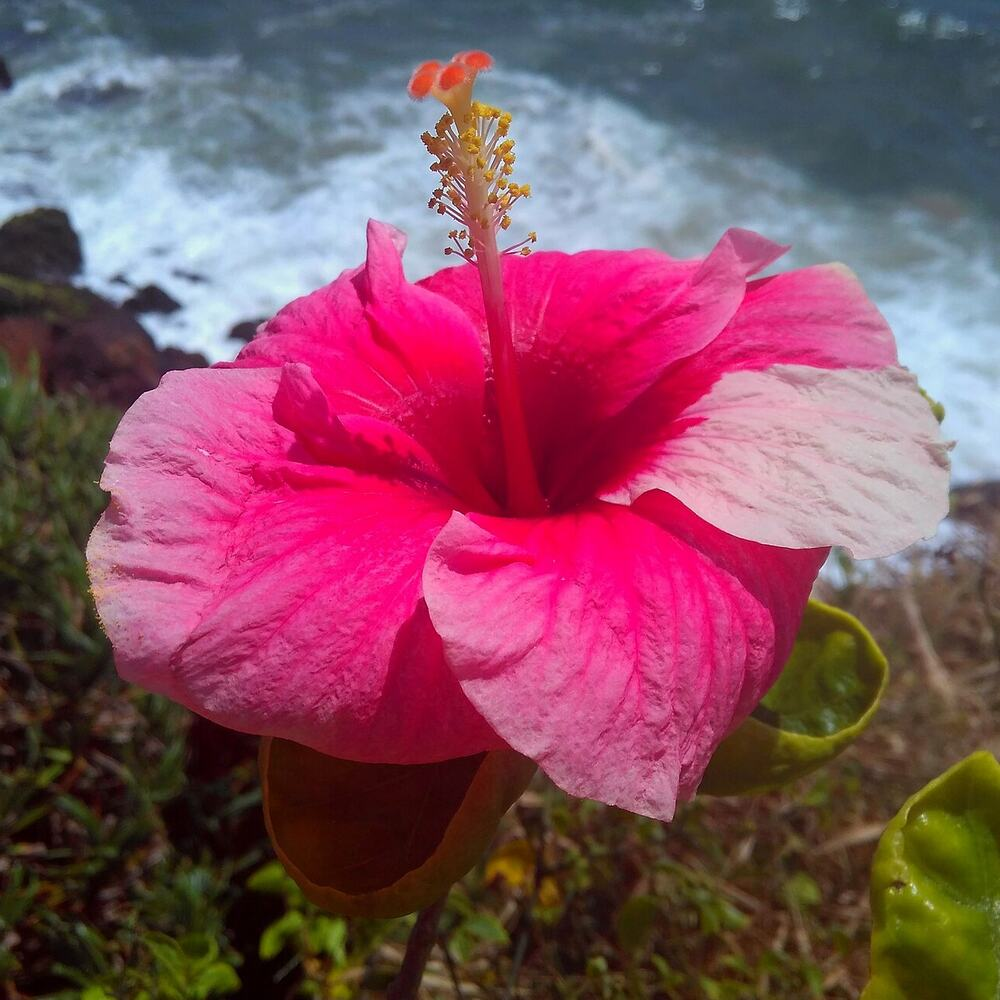

הקופסה של צ'יקהChika’s case
ציפורנייםNails
מניקור, ג'ל לק, בנייה ומילויManicure, gel polish, extensions and fills
קונספט לדוגמה שנבנה עבור Chika Spa & Beauty · זה אינו האתר הרשמי של העסקA sample concept built for Chika Spa & Beauty · This is not the business’s official website





ציפורניים, פדיקור, איפור קבוע לגבות והסרת שיער בלייזר. קרן היסוד 30, קריית ביאליק.Nails, pedicure, permanent brows and laser hair removal. 30 Keren HaYesod, Kiryat Bialik.
מניקור, ג'ל לק, בנייה ומילויManicure, gel polish, extensions and fills
איפור קבוע: מיקרובליידינג, פודרה ושיטת השערהPermanent make-up: microblading, powder and hair-stroke
מניקור ופדיקור לכל כף הרגל, עם ג'ל לק או בלי.Manicure and a full-foot pedicure, with or without gel polish.
בניית ציפורניים ומילוי ג'ל, במבנה אנטומי.Nail extensions and gel fills, shaped to the natural nail.
טיפולי לייזר להסרת שיער, באותו מכון.Laser hair removal, in the same salon.
סטים של מניקור ופדיקור באותו ביקור.Manicure and pedicure sets in one visit.
כל התמונות כאן הן עבודות שהמכון העלה בעצמו. גללו, וכל אחת עולה על הקודמת.Every photo here is work the salon posted itself. Scroll, and each one slides over the last.
טיפול, יום ושעה. ההודעה נכתבת לבד.Treatment, day and time. The message writes itself.
אל: Chika Spa & BeautyTo: Chika Spa & Beauty
ביקורות בגוגל Google reviews
״לפני כמה חודשים התחלתי לעשות אצלה ציפורניים והיא הפכה לחברה! מעבר לעבודה המקצועית… פשוט כיף להגיע״“A few months ago I started doing my nails with her and she became a friend! Beyond the professional work… it’s simply fun to come.”
״טיפול לייזר הכי מקצועי שיש. עשיתי לפני במקום אחר, התוצאות לא משהו, ואז הכרתי אילונה המדהימה. שירות, יחס ומקצועיות. ממליץ.״“The most professional laser treatment there is. I’d tried elsewhere with so-so results, then I met the amazing Ilona. Service, care and skill. Recommended.”
״עבודה מסודרת, נקייה ומושלמת. תודה על השירות, היה מעולה.״“Neat, clean, perfect work. Thank you for the service, it was excellent.”
״מקום מושלם, שירות טוב ואני מאוד מרוצה״ · נעמה כץ“A perfect place, good service and I’m very happy” · Naama Katz
״מעולה, מהיר ואיכותי״ · Евгения Гавришева“Excellent, quick and high quality” · Evgenia Gavrisheva
״ויקה המלכה שלי, הכי טובה שיש״ · מילנה וישובסקי“Vika, my queen, the very best” · Milana Vishovsky
מניקור, פדיקור, ג'ל לק, בניית ציפורניים ומילוי ג'ל, איפור קבוע לגבות (מיקרובליידינג, פודרה ושיטת השערה) והסרת שיער בלייזר.Manicure, pedicure, gel polish, nail extensions and gel fills, permanent brows (microblading, powder and hair-stroke) and laser hair removal.
ראשון עד חמישי 8:00–22:00, שישי 8:00–16:00, שבת סגור.Sunday to Thursday 8:00–22:00, Friday 8:00–16:00, closed Saturday.
קרן היסוד 30, קריית ביאליק. המפה למטה.30 Keren HaYesod, Kiryat Bialik. The map is below.
בוואטסאפ או בטלפון 053-357-5331. אפשר לבחור טיפול ויום בפלטה למעלה, וההודעה מוכנה.On WhatsApp or by phone, 053-357-5331. Pick a treatment and a day in the palette above and the message is ready.
באינסטגרם של צ'יקה: chika_spa.beauty@On Chika’s Instagram: @chika_spa.beauty
קריית ביאליקKiryat Bialik
…

הפרח מהלוגו, במציאותThe flower from the logo, for real